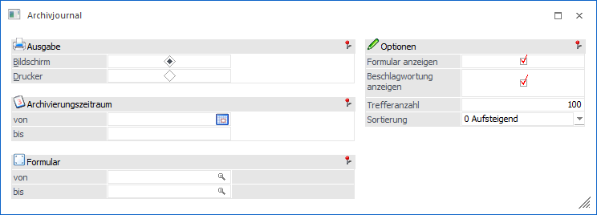
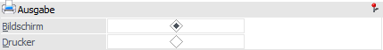
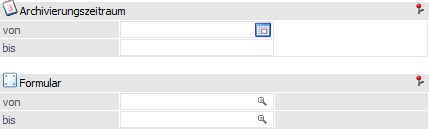
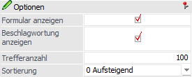
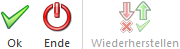

Im Archivjournal, welches über den Menüpunkt…
1 WinLine ADMIN
1 Archiv
1 Archivjournal
… aufgerufen wird, kann der Inhalt des Archivs in Journalform ausgegeben werden.

Ausgabe

Ø Bildschirm / Drucker
An dieser Stelle kann definiert werden, ob das Journal am Bildschirm oder auf den Drucker ausgegeben werden soll.
Selektion

Ø Archivierungszeitraum von / bis
Eingrenzung auf einen bestimmten Datumsbereich.
Ø Formular von / bis
Eingrenzung auf bestimmte Formulartypen.
Optionen

Ø Formularanzeigen / Beschlagwortung anzeigen
Die Checkboxen steuern den Umfang der Liste. Es werden entweder nur die gefundenen Formulare angezeigt oder auch die darin enthaltenen Schlagworte.
Ø Trefferanzahl
Hier kann definiert werden, wie viele Zeilen auf dem Journal ausgegeben werden sollen.
Ø Sortierung
Mit Hilfe dieser Auswahlliste kann hinterlegt werden, ob die Sortierung "0 - Absteigend" (neueste Einträge zuerst) oder "1 - Aufsteigend" (älteste Einträge zuerst) erfolgen soll.
Buttons

Ø Ok
Nach Drücken des Buttons "Ok" bzw. der Taste F5 wird das Journal ausgegeben.
Ø Ende
Durch Anwahl des Buttons "Ende" bzw. der Taste ESC wird das Fenster geschlossen.
Ø Wiederherstellen
Wenn der Button "Wiederherstellen" angeklickt wird, dann werden alle Selektionen der Tabelle wieder gelöscht.